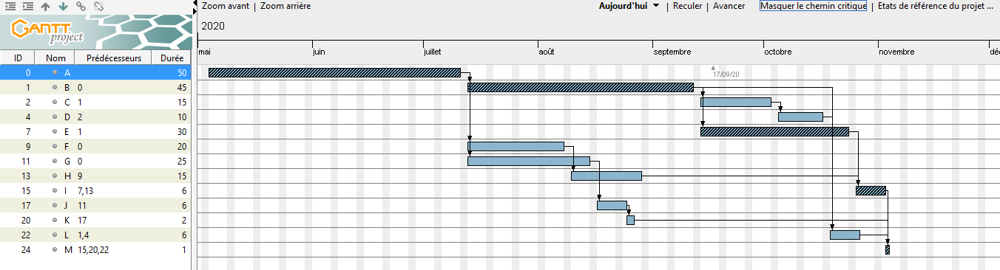

Pour terminer le semestre 2, nous avons dû proposer un site d'anciens étudiants pour l'IUT de Metz.
But du projet
Le but premier de ce projet était d'arriver à coopérer en équipe de 6 et de mettre en place une planification, une réunion avec le client et de gérer la répartition du travail. Ce n'était pas la technique qui était demandée mais de savoir gérer l'organisation du travail et la gestion du projet.
Ce que cela m'a apporté :
Ce projet est celui qui m'a le plus permis d'apprendre à travailler en équipe : il a fallu communiquer tout du long, notamment pour réaliser les travaux préparatoires :
Déterminer le cahier des charges
Déterminer les moyens de communications (nous étions confinés à ce moment-là)
Préparer les questions à poser au client
Déterminer, bien entendu, la cible de ce projet pour mieux adapter notre travail (on ne va pas faire un site avec des gâteaux si ce n'est pas pour des pâtissiers par exemple :D )
Après le rdv avec le client, il a fallu nous répartir les tâches
Réaliser un diagramme de Gantt pour la progression du projet

Capture d'écran de notre diagramme de Gantt pour ce projet Répartition du travail :
Pour la réalisation des sites, nous avions décidé d'utiliser Wix.com car seul l'affichage importait (le format mobile n'était pas demandé). De plus, cet outil nous a permis de gagner du temps pour terminer nos rapports.
Seuls 2 personnes ont été nécessaires à la confection des sites mais nous étions en partage d'écran pour échanger nos idées. Cela a vraiment été un travail de groupe et d'échange d'idées.